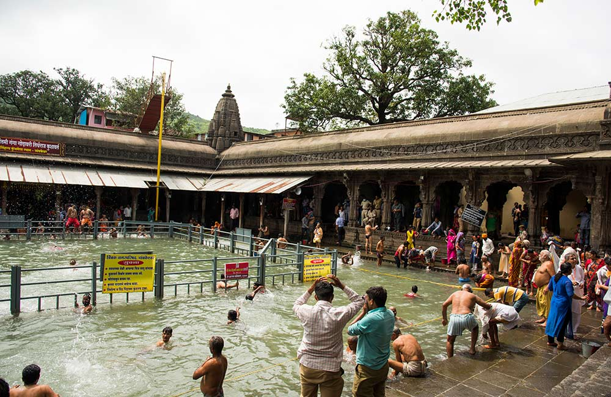
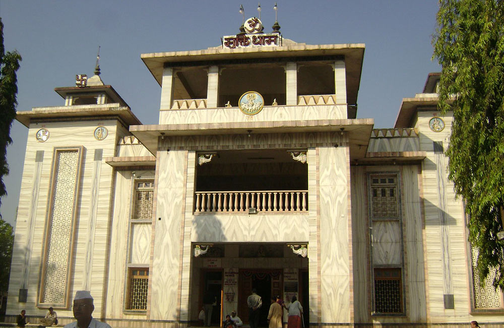
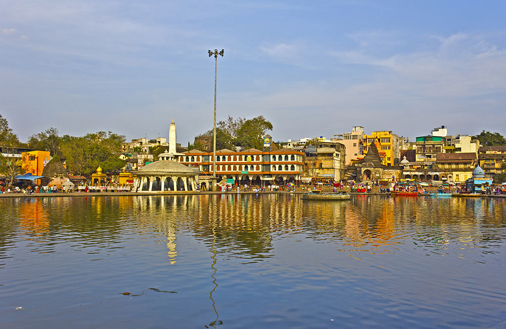

Places to Visit in Nashik with Family
A blend of old and new, Nashik is renowned for its dual identity. On one hand, it has charming, ancient temples and on the other, you will find luxury wine retreats which have become quite popular. After all, Nashik is called the ‘Wine Capital of India’ for a reason.
- Trimbakeshwar Temple – For the Devotees of Lord Shiva, Nashik

Renowned for being one of the 12 jyotirlinga sites, the Trimbakeshwar Temple is among the most revered places to visit on a Nashik tour. It is believed that Lord Shiva appeared as a pillar of light here. The auspicious Kumbh Mela of Nashik takes place around this temple only. Besides its holy ambience, the fact that Trimbakeshwar Temple lies between three hills, namely Nilgiri, Brahmagiri and Kalahari, makes it all the more alluring.
- Location: Shrimant Peshwe Path, Trimbak (30 km from Nashik city centre), Nashik
- Timings: 5:30 AM – 6 PM
- Entry Fee: Free entry
- Muktidham – Site of all the Jyotirlingas, Nashik

You can see replicas of all the 12 jyotirlingas at Muktidham. A beautiful temple made out of marble, Muktidham has walls with inscriptions about Mahabharata and the life of Lord Krishna, who is also the presiding deity here. One of the prime attractions in Nashik, the temple is visited by crowds from all walks of life and the frequency increases manyfold during the Kumbh Mela.
- Location: Mahatma Gandhi Rd, Gayakhe Colony, Nashik Road, Nashik
- Timings: 07:30 am to 06:30 pm;
- Entry Fee: Free
- Ramkund – Sacred Ghat on Godavari River, Nashik

Located in the old city of Nashik, Ramkund is a bathing ghat swarmed by devotees all year round. It is believed that Lord Rama performed the death rituals of his father here. People come here with the ashes of their loved ones and immerse it in water hoping they would find salvation.
- Location: Ramkund – Sacred Ghat on Godavari River, Nashik
- Timings: Every day
- Entry Fee: N/A
Back To Home